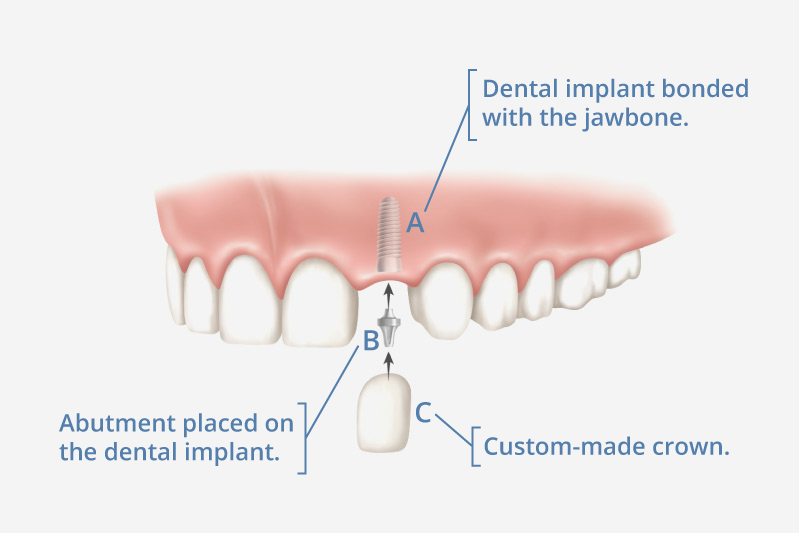

Dental implantology is a branch of dentistry that aims to insert dental implants, which do nothing else than replacing the root of the tooth and its structure, once it has fallen out or has been extracted.
Dentures and bridges mounted to implants won't slip or shift in your mouth, an especially important benefit when eating and speaking. This secure fit helps the dentures and bridges, as well as individual crowns placed over implants feel more natural.
Modern dental implants have been used successfully for over 30 years. They are the strongest devices available to support replacement teeth. Even better, they allow these new teeth to feel, look and function naturally.
The cost of a dental implant is around 300 Euros in Albania. This comes due to much lower taxation rates than in Italy or Europe, and also due to the wages here being lower. This however does not mean that the quality is worse than in Italy, our clinic only uses dental implants manufactured in Switzerland that have a warranty for life.
A dental implant is a dental surgery technique, aimed at recreating a missing tooth. Dental implants are metal posts or frames that are surgically positioned into the jawbone beneath your gums. Once in place, they allow your dentist to mount replacement teeth onto them. Because implants fuse to your jawbone, they provide stable support for artificial teeth.
Because it takes careful planning by the maxillo-facial surgeon before the procedure, there should be some preparations made by the patient first:
The implant procedure by itself is really short (20 minutes) and is less painful than having your tooth removed. The full process involves multiple steps:
After the brief dental implant procedure, there will be a period of waiting for 3-4 months. During this time the surgical site will heal and new jawbone will grow. Depending on your situation, the specific procedure done or the materials used, certain steps can be combined.
Several techniques can be used to rebuild bone, restore your natural jawline and provide a sturdy foundation for implant-supported teeth. These include:
It may take several months for the transplanted bone to grow enough new bone to support a dental implant. In some cases, you may need only minor bone grafting, which can be done at the same time as the implant surgery. The condition of your jawbone determines how you proceed.
You can think of implants as artificial tooth root. During surgery to place the dental implant, your oral surgeon makes a cut to open your gum and expose the bone. Holes are drilled into the bone where the dental implant metal post will be placed. Since the post will serve as the tooth root, it's implanted deep into the bone.
Once the metal implant post is placed in your jawbone, osseointegration begins. During this process, the jawbone grows into and unites with the surface of the dental implant. This process, which can take several months, helps provide a solid base for your new artificial tooth — just as roots do for your natural teeth.
When osseointegration is complete, you may need additional surgery to place the abutment — the piece where the crown will eventually attach. The abutment placement can be either done before or after bone grafting. The surgeon can fill you in with more details.
Once your gums heal, you'll have more impressions made of your mouth and remaining teeth. These impressions are used to make the crown — your realistic-looking artificial tooth. The crown can't be placed until your jawbone is strong enough to support use of the new tooth.
After implant treatment avoid rinsing your mouth and try not to disturb the wound with your tongue or fingers for the rest of the day (although this can be tempting). This may cause bleeding by dislodging the blood clot that has formed. Don’t spit, suck on straws or smoke. This can also dislodge blood clots and slow down the healing process.
You should be cautious of the way you eat in the days after the procedure (until the gum tissue heals itself). Avoid eating spicy, hot foods, as they irritate your gum tissue. It is best to avoid small food like popcorn and seeds that can get stuck in your gums and cause inflamation.
It's important to stay hydrated the day after the surgery and preferrably have cold drinks. Avoid alcohol and eating until the local anaesthetic has worn off. Generally, you can return back to your usual diet within a week.
Book your dental implant procedure today↓